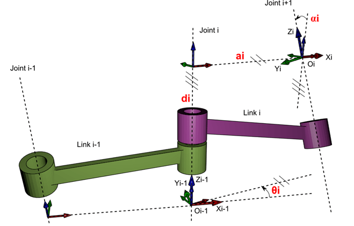
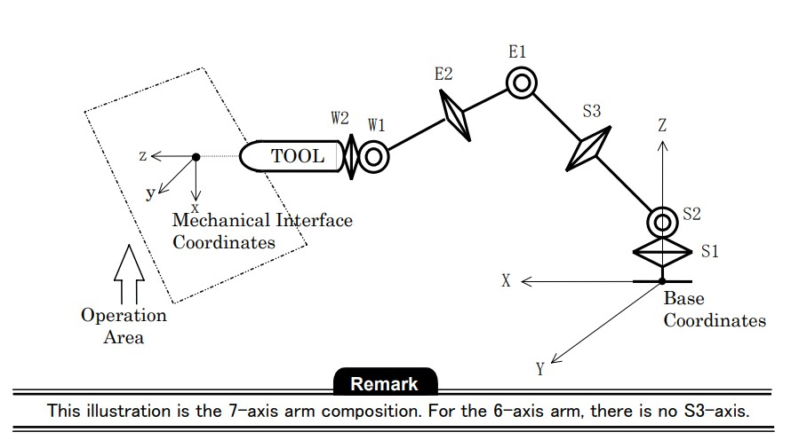

Conventions de Denavit–Hartenberg (DH)
Les conventions de Denavit–Hartenberg permettent de décrire la géométrie d’un robot manipulateur à l’aide de transformations homogènes successives. Elles sont utilisées pour établir la cinématique directe et inverse des bras articulés.
Il existe deux variantes principales :
- La convention DH standard (Denavit & Hartenberg, 1955)
- La convention DH modifiée (MDH)
Ces deux conventions décrivent un enchaînement de rotations et translations, mais l’ordre et la position des axes diffèrent. Cela entraîne des matrices différentes et des règles d’assignation de repères distinctes.
L'utilisation de la convention DH est intéressante pour systématiser les calculs du modèle géométrique.
Cette méthode permet de traiter tout les cas de figures, même pour des robots particuliers. Cela permet aussi
de prendre en compte les défauts de fabrications pour des modèles très précis.
Matrice DH
- L’axe zi correspond à l’axe de l’articulation i.
- L’axe xi est porté par le perpendiculaire commun aux axes zi et zi+1.
- Si les axes zi et zi+1 sont concourants, les origines des repères Oi et Oi+1 sont placées au point d’intersection de ces axes.
La transformation homogène entre les repères \(R_{i-1}\) et \(R_i\) est :
Signification des paramètres :
\(\alpha_i\) : angle entre zi-1 et zi autour de xi-1
\(a_i\) : distance entre zi-1 et zi le long de xi-1
\(\theta_i\) : angle entre xi-1 et xi autour de zi
\(d_i\) : distance entre xi-1 et xi le long de zi
Convention de Denavit-Hartenberg (sur ce schéma αi < 0 et θi < 0) :

Pour établir la conventions DH standard, les deux étapes se font dans cet ordre :
Une translation de di du repère choisi le long de l’axe
zi-1 et faire une rotation de θi autour de
l’axe zi.
Puis ensuite faire une translation de ai du repère choisi le long de l’axe xi et faire une rotation de αi autour de l’axe xi.
Matrice DHM
Avec la matrice DH modifiéen la transformation homogène entre les repères Ri-1 et Ri est inversée. En effet l’ordre des deux étapes de rotations et translations est inversé par rapport à la DH standard.
Exemple concret :
cas du PA10 :
Le PA10 est un robot Mitsubushi, on le retrouve à 6 ou 7 degrés de libertés. Il est utilisé pour la recherche de nouvelles approches dans le domaine de la robotique industrielle. Je l'ai utilisé lors de mon stage au Japon est il illustre parfaitement l'utilité de la convention DH.
Système de coordonnées du PA10-7C
Longueur articulaire PA10-7C
Avec ces informations on peut en deduire la matrice DH :
| i | αi (rad) | di (m) | θi (rad) | ri (m) |
|---|---|---|---|---|
| 1 | 0 | 0 | q1 | 0.317 |
| 2 | -π/2 | 0 | q2 | 0 |
| 3 | π/2 | 0 | q3 | 0.45 |
| 4 | -π/2 | 0 | q4 | 0 |
| 5 | π/2 | 0 | q5 | 0.48 |
| 6 | -π/2 | 0 | q6 | 0 |
| 7 | π/2 | 0 | q7 | 0.07 |
On peut déduire ainsi les paramètre DH du PA10-6CE, un robot similaire, avec cette méthode (il n'est pas mathematiquement possible d'avoir un matrice DH de 6 lignes si on veut avoir la bonne orientation de rotation du poignet, donc on rajoute la ligne 4)
| i | αi (rad) | di (m) | θi (rad) | ri (m) |
|---|---|---|---|---|
| 1 | π/2 | 0 | q1 | 0.317 |
| 2 | 0 | 0.45 | q2 + π/2 | 0 |
| 3 | 0 | 0.48 | q3 | 0 |
| 4 | -π/2 | 0 | π/2 | 0 |
| 5 | π/2 | 0 | q4 | 0 |
| 6 | -π/2 | 0 | q5 | 0 |
| 7 | 0 | 0.07 | q6 | 0 |
On voit bien que la notation du PA10-6CE est plus intuitive en convention DH et le PA10-7C en convention DHM.
Convention DH & Modelisation Dessin sur Python
import numpy as np
import matplotlib.pyplot as plt
#Matrice DH classique
def DH(alpha, a, theta, d):
ct = np.cos(theta)
st = np.sin(theta)
ca = np.cos(alpha)
sa = np.sin(alpha)
T = np.array([
[ ct, -st*ca, st*sa, a*ct],
[ st, ct*ca, -ct*sa, a*st],
[ 0, sa, ca, d ],
[ 0, 0, 0, 1 ]
])
return T
# Matrice DH modifié
def DH_M(alpha, a, theta, d):
ct = np.cos(theta)
st = np.sin(theta)
ca = np.cos(alpha)
sa = np.sin(alpha)
return np.array([
[ct, -st, 0, a ],
[st*ca, ct*ca, -sa, -sa*d],
[st*sa, ct*sa, ca, ca*d],
[0, 0, 0, 1 ]
])
# Vecteur des angles articulaires
q_6dof = np.array([0, 0, 0 ,0, 0, 0])
q_7dof = np.array([0, 0, 0 ,0, 0, 0, 0])
# Matrice des paramètres DH pa10-6ce
DH6_parameters = np.array([
[np.pi/2, 0, q_6dof[0], 0.317],
[0, 0.45, q_6dof[1]+np.pi/2, 0],
[0, 0.48, q_6dof[2], 0],
[-np.pi/2, 0, np.pi/2, 0], # pour contrecarrer la rotation mathématiquement impossible à enlever
[np.pi/2, 0, q_6dof[3], 0],
[-np.pi/2, 0, q_6dof[4], 0],
[0, 0.07, q_6dof[5], 0],
])
# Matrice des paramètres DH pa10-7c
DH7_parameters = np.array([
[ 0, 0, q_7dof[0], 0.317],
[-np.pi/2, 0, q_7dof[1], 0 ],
[ np.pi/2, 0, q_7dof[2], 0.45 ],
[-np.pi/2, 0, q_7dof[3], 0 ],
[ np.pi/2, 0, q_7dof[4], 0.48 ],
[-np.pi/2, 0, q_7dof[5], 0 ],
[ np.pi/2, 0, q_7dof[6], 0.07 ]
])
# -----------------------------
# MGD
# -----------------------------
six = True # si on veut utiliser le robot 6 ou le 7 axes
if six :
T = np.eye(4)
points = [T[:3, 3]] # sauvegarde pour le plot
for i in range(DH6_parameters.shape[0]): # On calcul les transformées homogènes succesive
alpha, a, theta, d = DH6_parameters[i]
Ti = DH(alpha, a, theta, d)
T = T @ Ti
points.append(T[:3, 3]) # sauvegarde pour le plot
else :
T = np.eye(4)
points = [T[:3, 3]]
for i in range(DH7_parameters.shape[0]):
alpha, a, theta, d = DH7_parameters[i]
Ti = DH_M(alpha, a, theta, d)
T = T @ Ti
points.append(T[:3, 3])
# -----------------------------
# DESSINE LE ROBOT
# -----------------------------
points = np.array(points)
xs = points[:, 0]
ys = points[:, 1]
zs = points[:, 2]
fig = plt.figure()
ax = fig.add_subplot(111, projection='3d')
# plot
ax.plot(xs, ys, zs, '-o', markersize=8)
ax.set_xlabel("X")
ax.set_ylabel("Y")
ax.set_zlabel("Z")
ax.set_title("Visualization du robot avec DH")
L = 1
ax.set_xlim(-L, L)
ax.set_ylim(-L, L)
ax.set_zlim(-L, L)
ax.set_box_aspect([1,1,1])
ax.view_init(elev=30, azim=45)
plt.show()
Sources annexes :
Robotique industrielle de Guillaume Laurent & Nicolas Chaillet 2024
Manuel de programmation du PA10 par Mitsubushi
Range de déplacement du PA10 par Mitsubushi
Cours Modélisation robotique industrielle université de Picardie